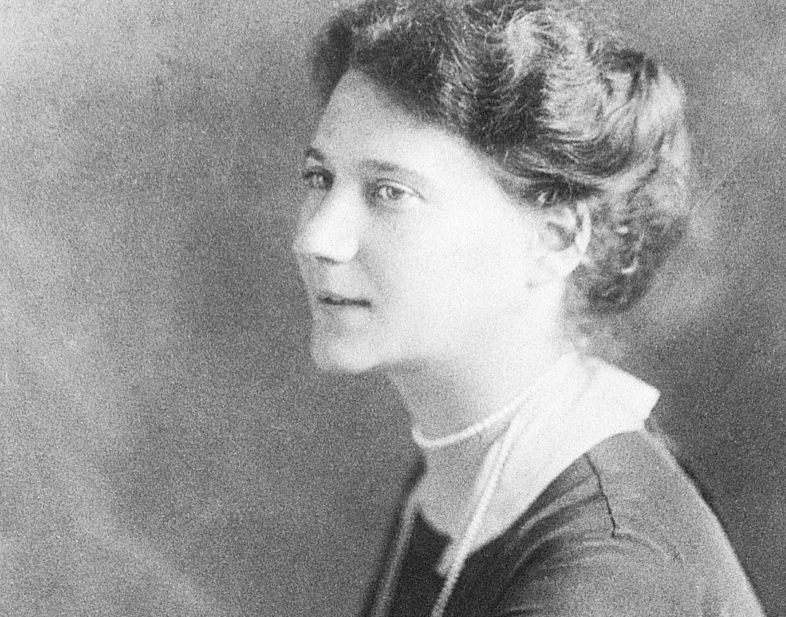

Hertha Koenig
Pierwsze spotkanie Herthy Koenig z Rainerem Marią Rilkem w domu wydawcy Samuela Fischera w roku 1910, wspólna fascynacja obrazem Pabla Picassa Les Saltimbanques, który Hertha zakupiła za radą Rilkego, oraz pobyt poety w jej majątku Böckel latem wojennego roku 1917 — to kamienie milowe historii ich szczerej i niezwykłej przyjaźni.
Wkrótce po przyjeździe do Monachium — pisze Donald Prater w swej biografii poety Dźwięczące szkło — Rilke wybrał się z wizytą do Herthy Koenig, bowiem w jej domu przy Widenmayerstraße wisiało płótno pędzla Picassa La famille des Saltimbanques (Rodzina kuglarzy, Linoskoczkowie) — obraz, który „w jednej chwili” objawił mu naturę artysty. Do spotkania obojga przyjaciół — pierwszego od dnia pamiętnej soirée w willi Fischerów w Berlinie w roku 1910 — doszło już w październiku, niemniej poeta dopiero później dowiedział się, iż Hertha posiada w swej kolekcji jedno z dzieł Picassa. Kiedy w listopadzie ujrzał w pewnej monachijskiej galerii Linoskoczków, nie zwlekając napisał do niej: „jest to bez wątpienia jedno z najważniejszych płócien naszej sztuki — czy nie mogłabyś Pani go uratować i zakupić?”
Hertha wspominała, jak to Rilke przyprowadził pewnego razu Reginę Ullmann, by pokazać jej, niczym dziecku, ów obraz, na którym za każdym razem odkrywał coś zachwycającego: „ten czarny aksamitny kaftanik chłopca na wyblakłym różu, ta delikatna dłoń spoczywająca na uchu kosza z kwiatami, ta niezmiernie opustoszała, acz pełna barw szarość hiszpańskiego odludzia, rozciągającego się za olbrzymimi postaciami, ten gliniany dzban obok siedzącej młodej kobiety”. „Pani musi go kiedyś zobaczyć” — pisał do Marianne Mitford — „nie jest on stworzony do Pani pokojów, gdyż to niewdzięczny gość, to świat sam w sobie, który nie znosi żadnego otoczenia”.
Lecz kimże są, powiedz, owi wędrowni linoskoczkowie,
ci nieco jeszcze szybciej niż my mijający, których od rana
urabia, komu, komu na uciechę
nigdy niesyta wola?…
— napisze Rilke w początkowych wersach Piątej elegii duinejskiej, zadedykowanej Hercie Koenig.
Fragment Elegii w przekładzie M. Jastruna.